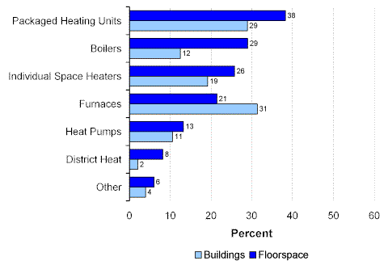
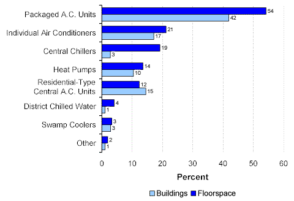
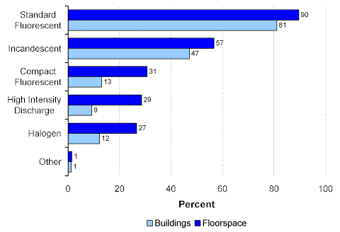

Topics:
Energy Sources and End Uses
End-Use Equipment
End-Use Equipment
Space Heating Equipment
CBECS collects information about space heating and other types of end-use equipment. It is interesting to compare two heating systems—packaged heating units and furnaces. Those two were the most commonly used types in commercial buildings (29 percent of buildings for packaged units and 31 percent for furnaces) (Figure 1). However, more floorspace was heated by packaged units (38 percent) than furnaces (21 percent), or any other heating system. The difference was building size—packaged units were used in larger buildings than those that used furnaces.
Figure 1. Heating Equipment Used in Commercial Buildings by Percent of Floorspace and Buildings, 1999 Energy Information Administration
Commercial Buildings Energy Consumption Survey
Cooling Equipment
Packaged air conditioning units were the predominant type of cooling equipment used in commercial buildings (Figure 2). Only that type exceeded 40 percent of buildings or 50 percent of floorspace. All other cooling equipment types were used in less than 18 percent of buildings, and only individual air conditioning units were used for more than 20 percent of floorspace.
Figure 2. Cooling Equipment Used in Commercial Buildings by Percent of Floorspace and Buildings, 1999 Energy Information Administration
Commercial Buildings Energy Consumption Survey
Lighting Equipment
Standard fluorescent and incandescent light bulbs were the most widely used types of lighting equipment (Figure 3). The vast majority of buildings (81 percent) used standard fluorescent lighting fixtures, while slightly less than half (47 percent) of buildings used incandescent bulbs.
Figure 3. Lighting Equipment Used in Commercial Buildings by Percent of Floorspace and Buildings, 1999 Energy Information Administration
Commercial Buildings Energy Consumption Survey
Next section, “Conservation Features and Practices”
Specific questions may be directed to:
Alan Swenson
alan.swenson@eia.doe.gov
Release date: May 21, 2002
http://www.eia.gov/consumption/commercial/data/archive/cbecs/char99/sources.html
If you are having any technical problems with this site, please contact the EIA webmaster at wmaster@eia.doe.gov.